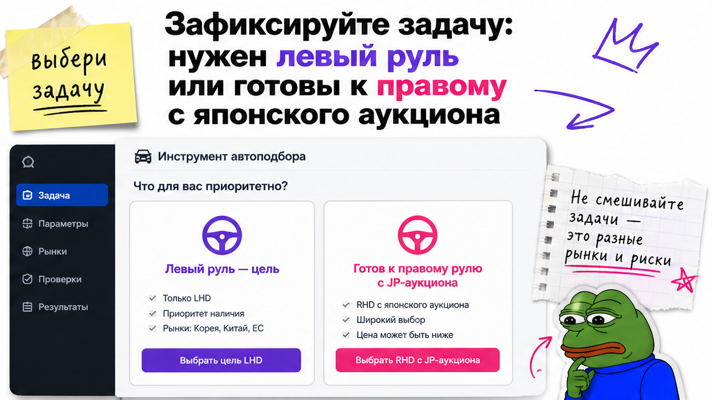
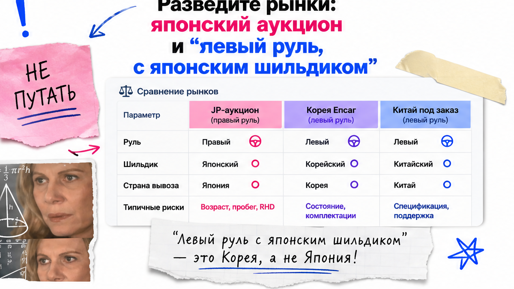
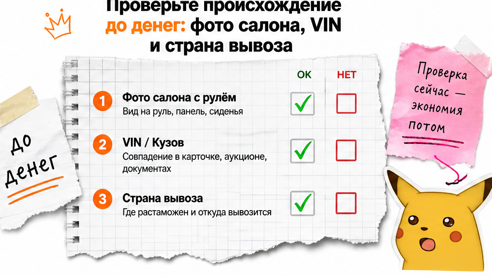

Олег из Новосибирска уже тянулся к кнопке перевода: в Telegram висело "Mazda CX-5 левый руль из Японии, депозит сегодня". Боль новичка здесь простая: страх депозита за правый руль, переделку или чужой рынок. Стоп. Фото кузова не говорит, где руль и откуда машина. Ниже – чеклист до депозита: руль на фото салона, страна вывоза и VIN в договоре. После него вы сможете решить: ставите на лот, меняете рынок на Корею или Китай, или отказываетесь – без сюрприза "правый руль" после оплаты.
TL;DR / Быстрый инсайт: "Левый руль из Японии" почти никогда не значит массовую Toyota или Mazda с японского аукциона. На внутреннем рынке Японии руль справа; заводской LHD там чаще европейский или американский премиум. До денег сверьте три вещи: руль на фото салона, страну вывоза и VIN/кузов в договоре. Нет трёх строк – нет депозита.
Мы в Авто-Сейлс во Владивостоке часто слышим одну путаницу: "японская марка" и "японский аукцион" – не одно и то же. Шильдик Toyota ещё не значит, что лот едет с USS. Сюрприз из практики: люди ищут левый руль "как в рекламе", а получают правый руль, машину с другого рынка или предложение "переделаем руль".
Задача гайда простая. За 20–30 минут закроете проблему "непонятно, что именно покупаю" и получите первый результат: заполненный чек и решение до перевода. Баллы аукционного листа здесь не разбираем – сначала руль, происхождение и договор.

Перед поиском лота напишите одну фразу. Вариант А: "мне принципиален левый руль". Вариант Б: "готов правый руль с японского аукциона ради выбора и прозрачного листа". Без фразы реклама ведёт туда, где красивее картинка.
На пальцах: японский внутренний рынок ездит по левой стороне дороги, поэтому массовые Toyota, Honda и Mazda там с правым рулём. Заводской левый руль (LHD) на японских аукционах встречается, но чаще это Mercedes, BMW, Audi и похожий премиум, а не "обычная Camry для семьи".
По данным JAIA за 2025 в Японии зарегистрировали 243 129 новых авто иностранных марок. Это потолок "иномарок", не доля левого руля. Искать бюджетный левый руль "как у соседа с аукциона" внутри Японии почти бессмысленно.
Делать: зафиксировать задачу по рулю до открытия каталогов. Не делать: верить заголовку "левый руль из Японии" без фото салона и без страны вывоза.

Типичная ошибка – читать рекламу как географию. Фраза "из Японии" может значить три разные вещи:
Схема выбора рынка:
Нужен левый руль и семейный бюджет → Корея (Encar) или Китай под заказ → Японию берите, если готовы к правому рулю либо к премиум-LHD с отдельной логистикой
| Рынок | Руль по умолчанию | Когда смотреть | Главный риск |
|---|---|---|---|
| Японский аукцион | Правый (RHD) | Готовы к правому рулю или ищете редкий заводской LHD-премиум | Ждать массовую леворульную Mazda "с USS" |
| Корея (Encar) | Левый (LHD) | Нужен левый руль и понятная история лота | Депозит без отчётов и без VIN |
| Китай под заказ | Левый (LHD) | Нужна свежая комплектация / японская модель с левым рулём | Путать шильдик с вывозом из Японии |
Например, запрос "Тойота с левым рулём из Японии" часто заканчивается либо правым рулём с аукциона, либо левым рулём, но уже не с японского внутреннего рынка.
Делать: сразу писать менеджеру: "страна вывоза – Япония, Корея или Китай?". Не делать: оплачивать бронь, пока страна вывоза "на согласовании".

До депозита нужен пакет из трёх совпадений. Нет пакета – разговор только про документы, не про перевод.
VIN помогает сверять происхождение, но не доказывает сторону руля. Руль – фото салона; страну вывоза – договор и логистика.
Красный флаг – "переделаем правый руль в левый, будет как завод". На практике такую переделку связывают с риском по педалям и электронике. Нужен заводской LHD – ищите заводской LHD.
Делать: держать в одном чате фото салона + VIN + страну вывоза. Не делать: соглашаться на переделку руля ради скидки.
Если левый руль принципиален, а бюджет не премиум с японского аукциона, честнее смотреть рынки, где LHD – норма. Корея через Encar даёт левый руль по умолчанию. Китай под заказ через Владивосток часто закрывает запросы на свежие комплектации.
Японию оставляйте в shortlist, если вас устраивает правый руль, либо вы целитесь в редкий заводской LHD-премиум и готовы ждать маршрут. С августа 2023 Япония ограничила прямой экспорт в РФ для авто с мотором свыше 1,9 л – срок и путь уточняйте у брокера без обещаний серых схем.
По обзорам 2026: без ограничений путь до Владивостока по части лотов – около месяца; премиум с крупным мотором через третью страну может растягиваться примерно до двух. Это ориентир, не гарантия в договоре.
Формула "дешевле на треть" без состава цены – ловушка. "N миллионов с доставкой" ≠ цена на номерах, пока не видно таможню, утиль, ЭПТС и комиссию.
Нужен подбор без самообмана по рынку – откройте каталог avto-sales125.ru и уточните задачу в Telegram avtosales125. Форм на странице нет.
Делать: выбирать рынок под руль, а не под красивый заголовок. Не делать: держать депозит, "пока найдут левый руль в Японии любой ценой".
Это ваш критерий результата на сегодня. Пока пункты не закрыты, деньги не отправляете. Половина конфликтных историй начинается с пропуска этого списка.
Критерий "готово": результат на руках – в заметках ответы на 10 пунктов; в черновике договора явно стоят руль, страна вывоза и идентификатор кузова; без этих трёх строк депозит не отправлен.
Делать: идти сверху вниз и ставить галочки. Не делать: закрывать глаза на пункт из-за "скидки только сегодня". Избегайте перевода, пока чеклист не закрыт. Сделайте паузу и перечитайте три строки договора ещё раз.
Если shortlist нужен под ключ через Владивосток, начните с каталога Авто-Сейлс. Отзывы о сопровождении – в 2GIS.
Материал проверен: редакция Авто-Сейлс (эксперты по авто под заказ из Японии, Кореи и Китая).
Достоверность: факты сверены с JAIA (иномарки 2025), RBC Autonews, Reuters/METI по экспортным ограничениям и практикой LHD через Владивосток на 2026-10-22; актуальные расчёты – в каталоге.
Да, но это редко про массовые Toyota/Mazda. Чаще заводской LHD на JP-аукционе – иностранный премиум. Если нужен обычный семейный левый руль, сначала смотрите Корею или Китай.
Правый лот с японского аукциона – типичный внутренний рынок. "Левый руль из Японии" в рекламе может означать редкий заводской LHD, машину другого рынка с японским шильдиком или путаницу в формулировке. До депозита требуйте фото салона и страну вывоза.
Через хаб Владивостока берут Корею, Китай и японские лоты. Для левого руля чаще стартуют с Кореи или Китая. Практичный путь: каталог Авто-Сейлс и переписка с задачей "нужен LHD" до любой оплаты.
Три обязательные строки: сторона руля, рынок/страна вывоза, VIN или номер кузова. Плюс состав цены "под ключ". Нет строк – не переводите. Скрин объявления договором не считается.
Для новичка – нет. Это не заводской LHD, а отдельный техриск. Если левый руль принципиален, ищите заводской LHD на подходящем рынке.
С 9 августа 2023 Япония расширила ограничения экспорта авто в РФ для машин с мотором свыше 1,9 л. Маршрут и срок уточняйте у брокера под конкретный лот. Не принимайте "как обычно за месяц", пока тип авто и путь не названы.
Аукционный лист про состояние и оценки лота. Этот чек-лист – про сторону руля, страну вывоза и идентификатор до депозита. Сначала закройте руль, страну и VIN, потом уже углубляйтесь в лист.